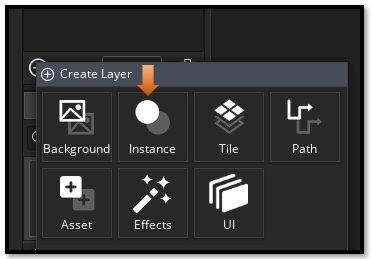
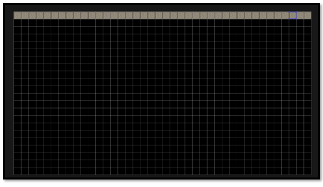
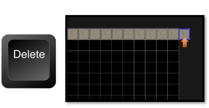
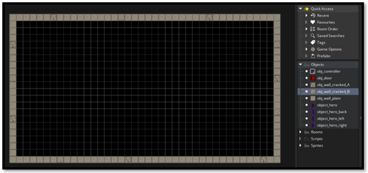
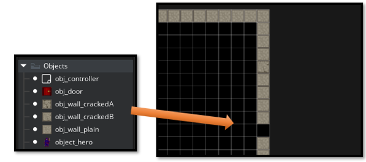

~4 Creating Your Outer Walls~
2/2/2026

The Outer Walls
Creating some outer walls are important because they will keep your moving objects from moving themselves, right out of your rooms. And that is probably not what you would want. So, we need to first create some outer walls to keep our object inside. To start with, it will be used to keep a hero object from just wandering off.
Note-We will be accessing these items in code later, so make sure your naming for stuff matches mine.
Layers
We have touched on layers in our first tutorial- “1 Introduction to Game Maker”. But now we have to make a new layer in order to hold our outer walls.
Go to the Plus icon at the bottom of the Layer Panel on the left-hand side of the app.

You want to create a new Instance layer. Objects need to go on an instance layer.
Name this Layer: Outer_Walls

Make sure that you click on this wall layer to make it active. All of your wall objects need to go onto the Outer_Walls layer.
Drag a wall object out of the Asset_Browser from the right side of the app and place it into the first grid space in the room.

Paint Your Wall Object in
You can hold down the alt-key now and since we selected the one wall piece inside of the asset browser(by clicking on it to select it), game maker knows what we want to paint with.
This way you can quickly add multiple wall pieces at the same time. I used the obj_wall_plain piece to start because I want most of my wall objects to be plain pieces. To paint with this piece, all you need to do is to hold down that alt-key and run your cursor along the area that you want to paint the piece into. I just ran my mouse cursor along the top edge of the room.
Deleting a Wall Object
If you make a mistake, and place the wall object into the wrong place just select the object you want to remove and hit your delete key on the keyboard. It will disappear.

Finish Painting the Wall pieces in

Now you can go in and swap some of the wall pieces out for your other two wall pieces (obj_wall_crackedA and obj_wall_crackedB) , that are sitting in the Asset browser, to give the room’s look, a bit of a variance.
To switch your wall pieces out
Go into your Work area, and select a wall piece that you want to switch out with your mouse curser, hit the delete key and move in your desired wall piece. You can now choose either (obj_wall_crackedA or obj_wall_crackedB) from the asset browser. Click on the piece you want from the Asset browser, and then click inside of the wall to fill in the hole that you created using your keyboard’s delete key.

That is all there is to creating an outer wall for your room